Квантовая мультивселенная, убийство своего дедушки и другие сюжеты: обзор книг физика Дэвида Дойча
Возможно, у каждого есть свой собственный список «Топ-10 книг, оказавших самое большое влияние». Особенность моего списка в том, что в него входят аж две книги, написанные одним автором. И это не самоповтор, книги действительно независимые, и каждая из них по отдельности может полностью перевернуть мировоззрение читателя.
Знакомьтесь: Дэвид Дойч. Профессор Центра Квантовых Вычислений (CQC) в Кларендонской лаборатории Оксфордского университета. Один из основоположников теории квантовых вычислений, наряду с другим учёным, Полом Беньоф, создавшим концепцию квантовой машины Тьюринга. Автор алгоритма Дойча-Йожи, позднее усовершенствованного Йожей. Лауреат премии Дирака, медали Дирака (это не одно и то же!), премии Micius Quantum Prize (ею награждён также Питер Шор), член Лондонского Королевского общества (ведущего научного общества Великобритании).
Что может рассказать такой учёный о Вселенной, месте в ней человека, науке, и вопросах, которыми издревле задаются пытливые умы?
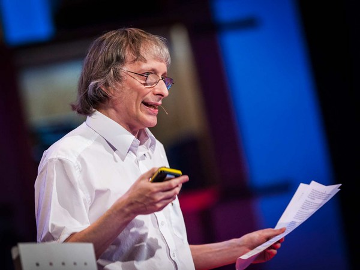
На самом деле, я далеко не уверен, что Дэвид одобрил бы такое вступление. В своих книгах он неоднократно высказывался против того, чтобы идеи оценивались по авторитету источника. Такой (порочный) подход он называет «джастификационизм». Для того, чтобы продемонстрировать, насколько источник идей неважен для их оценки, главу, посвящённую джастификационизму, он оформил в виде... впрочем, не будем спойлерить. Если вы дочитаете его книги до этого места, вы и сами сможете увидеть, насколько поучительна подобная иллюстрация.
Однако, нам, простым смертным, полезно в первом приближении ориентироваться на личность автора. Уж слишком много с момента появления квантовой механики (которой в его книгах уделяется очень много внимания) развелось разных околонаучных фриков, пишущих о котах и кошках Шрёдингера, квантовом сознании Вселенной и прочей ерунде.
— Что случилось, Рик? Квантовый карбюратор сломался?
— Господи, Морти! Нельзя просто приставить научно-фантастическое слово к автомобильному термину и надеяться, что это что-нибудь значит!.. «Рик и Морти», «Наверное, Рики сошли с ума»
Наш автор не таков, хоть он и пишет о вещах, поначалу с трудом укладывающихся в голове.
Кажется, наша Вселенная «немного» сложнее, чем мы думали
Многие парадоксы квантовой механики устроены по одному принципу:
Мы рассматриваем поведение совокупности частиц. В нём обнаруживаются черты группового поведения.
Уменьшаем совокупность, пока не останется одна-единственная частица.
Черты группового поведения никуда не исчезают.
Не будем рассматривать здесь навязшие в зубах примеры (тем более, автор тоже до них не опускается). Поговорим о такой простой вещи, как самопроизвольный распад. Если взять некоторое количество атомов радиоактивного элемента (такие атомы спонтанно распадаются), период времени, за который их число уменьшится вдвое, остаётся постоянным. Эта константа, характеризующая данный элемент, называется периодом полураспада. Но отдельный атом не может распасться наполовину: он либо распадётся, либо нет. «Ну и что в этом парадоксального?», спросит кто-то. «Просто вероятность того, что атом распадётся через период полураспада равна 50%». Да. Но вот какой интересный момент: беря на рассмотрение произвольный атом, мы не знаем, какова его история и сколько периодов полураспада он уже пережил. Тем не менее, вероятность того, что он распадётся в следующий период полураспада (отсчитываемый от произвольного момента во времени!) будет всё той же. Если немного подумать, такое поведение выглядит очень странно. Ответ «классической» квантовой механики (это не оксюморон, так мы назовём т.н. Копенгагенскую интерпретацию) в том, что природа случайна в своей основе, и мы берём это за аксиому. Слово «аксиома» значит, что мы не ищем дальнейших объяснений.
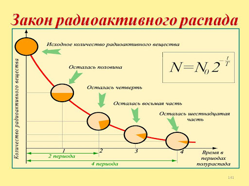
Дэвид рассматривает другой пример: знаменитый «двухщелевой эксперимент». Приглядевшись, можно обнаружить в нём всё ту же «парадоксальную» схему. Если взять источник монохроматического (одноцветного) света и поставить между ним и экраном перегородку, в которой прорезаны две параллельные щели, картина освещения на экране будет зависеть от того, не перекрываем ли мы одну из них. Более конкретно: на экране будут наблюдаться характерные полосы чередующихся ярких и тёмных мест, говорящие о том, что в разные точки на экране попадает разное количество света (фотонов). Среди этих мест будет такое, которое ярко освещено, когда одна из щелей перекрыта, но при открытии обеих щелей оно становится тёмным. На первый взгляд, в этом нет ничего удивительного: фотоны могут взаимодействовать после прохождения разных щелей и влиять друг на друга (не давать попадать друг другу в то самое место, отчего оно и темнеет). Если мы посмотрим, как влияют друг на друга молекулы воды, начавшие движение в результате падения камня и встречающие на своём пути дамбу с двумя щелями, то увидим нечто похожее: волны, которые интерферируют. В результате интерференции картина распределения гребней волн (аналог яркости) по пространству изменится.
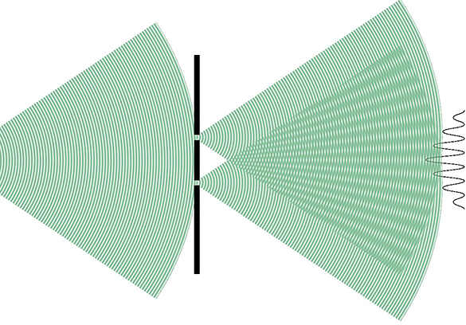
Однако, на второй взгляд выяснится кое-что необычное.
Если взять очень слабый источник освещения (например, поставив на пути света большое число светофильтров), можно добиться того, что источник начнёт испускать единичный фотон за длительный промежуток времени. Если поставить в «светлое» и «тёмное» места фотодетектор и начать считать улов, окажется, что ничего не изменилось: найдутся области, в которых фотон детектируется, когда открыта только одна щель, но стоит открыть вторую, как поймать в этом месте фотон становится невозможно.
Ещё раз: речь идёт об одном-единственном фотоне. Он летит по случайным траекториям и может поглотиться перегородкой, а может и пройти через одну из щелей. Но стоит открыть для него дополнительную «калитку» (вторую щель), как он перестаёт попадать в некую область. И объяснить такое поведение через взаимодействие с другими фотонами мы уже не можем. Хуже всего то, что если поставить детекторы перед каждой из щелей, сработает только один (фотон действительно один, он не разделяется на два, чтобы собраться с другой стороны воедино!). Этот эксперимент — не мистификация, он был поставлен множество раз и давал стабильно воспроизводимый результат.
Дойч пишет: у нас есть одно разумное объяснение этому наблюдению. Что-то прошло через вторую щель, когда фотон прошёл через первую. Это «что-то» провзаимодействовало с фотоном и повлияло на его траекторию. Но прежде, чем выбрать самое разумное объяснение, надо посмотреть, какие объяснения у нас вообще есть.
Самое традиционное объяснение сводится, как ни странно, к тому, что такими вопросами задаваться нельзя. Есть факт испускания фотона, есть факт его (не)детектирования. А вопросы: «Что происходило между этими событиями?», «Какова была трактория фотона?», «Что на неё повлияло?» просто лишены физического смысла. Очевидно, что такое «объяснение» является, по сути, отказом от всяческих объяснений, так что любой ответ по существу будет лучше.
Копенгагенская интерпретация, выдвинутая некоторыми пионерами в области квантовой механики, утверждает, что нежелательно (выделение моё — СШ) постулировать что-либо, выходящее за рамки математических формул, физической аппаратуры и результатов, которые позволяют нам получить некоторые знания о том, что происходит на атомном уровне.
— Википедия
Другое объяснение гласит, что «потенциально возможная» траектория фотона повлияла на его актуальную, реализовавшуюся траекторию. Для нас, последователей школы физического реализма, пишет Дэвид, это лишено всякого смысла. Всё, что взаимодействует — реально существует, и никакие «потенциальные возможности» на реальность, не будучи её частью, влиять не могут.
Третье объяснение выглядит как хорошая база для сайфайного рассказа: фотон посылает себе некий сигнал из будущего в прошлое, и тем самым влияет на свою траекторию. Объяснение, конечно, крутое, но вовлекает много ненужных сущностей, а значит стоило бы поискать что-нибудь попроще и не такое фантастическое.
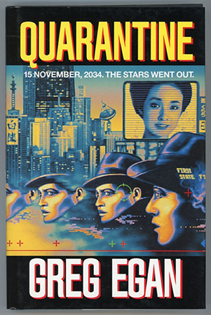
Наконец, есть и четвёртое, которое действительно легло в основу сайфайной повести («Карантин» Грега Игана — притом, что Иган не только писатель, но и учёный, недавно наделавший большого шума в математике). Фотон всё-таки разделяется на два экземпляра, каждый из которых проходит своим путём. После прохождения щелей они взаимодействуют, а затем попадают в... куда? Два экземпляра детектора, каждый из которых находится в своём состоянии. Затем в дело вступает наблюдатель — человек. Процесс наблюдения затрагивает гипотетический участок мозга, который (не спрашивайте, как) «схлопывает» детектор из смешанного состояния в «чистое», но это чистое состояние несёт следы того, что и детектор, и фотон были «размазаны». Я полагаю, что никто, включая автора (Грега Игана), всерьёз это объяснение не принимает, а упомянул его лишь для полноты картины, да ещё потому, что понятие «наблюдателя» действительно часто употребляется в статьях о квантмехе.
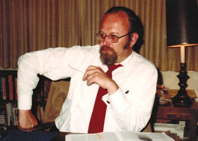
Хью Эверетт, автор концепции физического реализма в квантовой механике, вдохновивший Дойча
На фоне этих объяснений наше первоначальное, о неком физическом объекте, прошедшем через вторую щель и повлиявшем на фотон, прошедший через первую, действительно выглядит самым разумным. Теперь осталось понять, что это за объект и какими свойствами он обладает. Для этого автор предлагает задуматься, что значит «перекрывать щель». Если мы установим в неё стекло, будет ли она перекрыта? Оказывается, нет — оптически прозрачная щель и есть открытая. Но стоит закрасить стекло светонепроницаемой краской, как картина становится такой же, что и для однощелевого эксперимента. Из этого и других ограничивающих дополнительных экспериментов (например, установки перископа, то есть, системы зеркал в одну из щелей) становится ясно, что наш таинственный объект обладает всеми свойствами фотона. Но он не взаимодействует ни с чем, кроме нашего, «реального» фотона. Спросим себя: 1) как такое возможно, а пока перейдём к следующему вопросу.
Является ли этот «альтернативный фотон» единственным? Нет, и более того: если оценить их количество исходя из геометрии эксперимента (включающей максимальную площадь, которую можно осветить лазером, и площадь минимально достижимого размера отверстия), нижняя граница составит порядка триллиона этих фотонов. (Это значит, что их точно не меньше. А вот верхняя граница, точнее, её принципиальное наличие — не менее принципиальный вопрос, который пока не рассматривается). Но: 2) откуда в нашем лазере столько энергии? И, главное, почему не испаряется перегородка, поглотившая все эти фотоны?
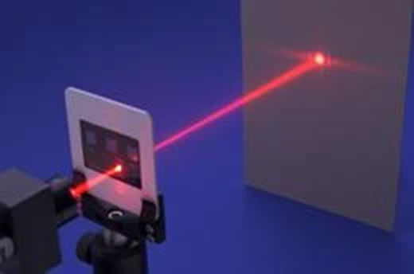
Ответ на оба вопроса один и тот же. Из других экспериментов мы знаем, что квантовыми свойствами обладают не только единичные частицы, но и состоящие из них системы, просто с ростом их сложности обнаружить эти свойства всё труднее (экспоненциально труднее!). На каждый испущенный «альтернативный фотон» должен приходиться испустивший его «альтернативный атом» и ещё один «альтернативный атом» в перегородке, поглотивший его. Этого требует закон сохранения энергии. «Альтернативный атом», испустивший «альтернативный фотон» сам должен получить откуда-то энергию, а «альтернативный атом» перегородки должен на что-то опираться, чтобы не упасть. Таким образом, «альтернативный фотон» складывается с «альтернативными атомами» в «альтернативную систему». Которую мы можем экспериментально обнаружить по её единственному (но от этого не менее реальному!) взаимодействию с нашей «реальной» — интерференции. Интерферируют только «альтернативные» варианты одной частицы, иначе мы могли бы поймать их обычным детектором.
Именно в этом и содержится ключ к квантовым парадоксам, основанным на проявлении «группового поведения» отдельной частицы: мы действительно всегда наблюдаем за целой группой взаимодействующих путём интерференции вариантов.
Как мы помним, всё, что взаимодействует — реально существует (с точки зрения сторонников физического реализма). «Альтернативный фотон» — самый настоящий физический объект. И поскольку нет никаких причин отдавать предпочтение одной системе, для другого наблюдателя, состоящего из «альтернативных частиц», наш «реальный фотон» покажется «альтернативным», а один из фотонов, кажущихся «альтернативными» нам — «реальным».
В этом месте любитель сайфая скажет: «Ведь это же параллельные вселенные!». Дойч поправляет: нет, в строгом значении этого слова вселенные не параллельны — по-настоящему параллельные вселенные не взаимодействуют. Наши же вселенные взаимодействуют за счёт интерференции. Поэтому, лучше будет называть их не вселенными, а «синглверсами» — в отличие от их совокупности, «мультивселенной» («мультиверса»).
Есть и другой важный нюанс. Теория квантового мультиверса не описывает Вселенную, в которой физически реализуется абсолютно всё, что мы только можем себе представить. Нет, законы квантовой механики накладывают жёсткие ограничения. В частности, как указывает Дэвид, в рамках этой теории не существует синглверса, в котором заряд электрона отличался бы от привычного нам значения. Это неминуемо привело бы к нарушению интерференции, что не соответствует результатам наблюдений.
Эпистемология и психология
Если объяснение через мультиверс является самым разумным, почему же мы не изучаем его в школах и университетах?
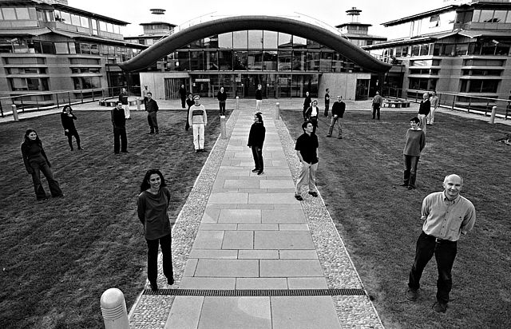
Центр Квантовых Вычислений
В 1981 году Джон Уилер — научный руководитель Ричарда Фейнмана, Кипа Торна и Хью Эверетта, автор термина «чёрная дыра» и просто выдающийся физик — устроил в Техасе вечеринку для учёных, занимающихся основами вычислений. На неё был приглашён и Дойч. Именно на этой вечеринке его осенило, что ньютоновская физика и квантовая механика описывают два разных типа вычислительных устройств. В 1985 году он написал свою классическую работу в этой области. В 1987 году Артур Экерт прибыл в Оксфорд, где встретился с Дойчем. Экерт занимался квантовой криптографией и вдвоём с Дойчем они сформировали ядро будущего Центра Квантовых Вычислений. После революционной работы Шора, показавшего в 1994 году, как компьютер, построенный на идеях Дойча и более ранних идеях Фейнмана (то, что мы сегодня называем «квантовый компьютер») способен достичь результата, недостижимого на классическом компьютере, ЦКВ получил мощный импульс интереса и занялся вопросами практической реализации.
Ответ Дэвида не слишком утешительный. Причину следует искать не в физике, а в особенностях человеческой психологии. Существование триллиона вселенных — слишком грандиозный вывод из маленького факта «детектор не сработал». Хотя в некоторых других случаях это нам не мешает: например, какую бы энергию не излучала сверхновая, судить об этом мы можем только по электрическим сигналам, приходящим в мозг от сетчатки, а разница энергий при этом составляет многие порядки. В этом месте я оговорюсь, что произвольно смешиваю куски из обеих его книг («Структура реальности» и «Начало бесконечности») в целях удобочитаемости, хотя про мультиверс он больше пишет в первой, а про причины его неприятия — во второй:
Не все физики соглашались с копенгагенской интерпретацией и её последующими уточнениями. Эйнштейн так её и не принял. Физик Дэвид Бом изо всех сил пытался найти альтернативную, совместимую с реализмом интерпретацию и в итоге построил весьма сложную теорию, которую я рассматриваю как сильно замаскированную теорию о мультивселенной, хотя сам он решительно возражал против такого понимания. В 1952 году в Дублине Шрёдингер в шутку предупредил слушателей своей лекции, что то, что он собирается сказать, может прозвучать как «бред сумасшедшего». А сказал он, что когда его уравнение описывает несколько различных историй, то это «не альтернативы, но все они действительно происходят одновременно». Это самая ранняя из известных отсылок к мультивселенной.
Выдающемуся учёному приходилось шутить, что его можно принять за безумца. И почему? Просто потому, что он утверждал, что его собственное уравнение — то самое, за которое он получил Нобелевскую премию, — может оказаться верным.
На самом деле, ограничиться одним экскурсом в историю, чтобы докопаться до причин, не получится. Дэвид переключается от чистой физики к эпистемологии — науке о том, как устроена эффективная наука.
Некоторые физики, пытаясь избежать необходимости «смотреть в лицо гадким квантам синглверсам» прячутся за инструментализм. Какая разница, говорят они, как интерпретировать результаты экспериментов — давайте ограничимся формулами. Формулы не обманут. И если теория даёт предсказания, совпадающие с экспериментом — какого рожна вам ещё надо? Конкретно, применительно к квантовой механике соответствующий подход получил название “no interpretation”, а в просторечии — «Заткнись и считай!».
Дэвид объясняет, какого рожна, на трёх изумительно красивых примерах. Во-первых, он цитирует лауреата Нобелевской премии физика Стивена Вайнберга:
Важно иметь возможность сделать предсказания относительно изображений на фотопластинках астрономов, частот спектральных линий и т. п., а то, припишем ли мы эти прогнозы физическому воздействию гравитационных полей на движение планет и фотонов [как это было в физике до Эйнштейна] или искривлению пространства и времени, просто не имеет значения (Gravitation and Cosmology, p. 147).
…а затем ехидно спрашивает: Стивен! Неужели тебя правда мотивирует желание делать предсказания о пятнышках на фотопластинках? Конечно, нет: ты, как и любой порядочный учёный, пытаешься лучше понять, как устроен мир, а значит — ты лукавишь.
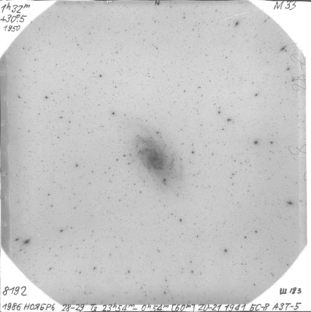
Во-вторых, то, чему мы припишем прогнозы, имеет значение, и оно самое что ни на есть практическое: когда на завтра прогнозируют ветреную погоду, есть разница, чем она будет вызвана — ожидаемой близостью района с высоким атмосферным давлением или более отдалённым ураганом. В случае урагана любой разумный человек примет адекватные меры безопасности.
В-третьих, наука просто устроена иначе. Прогнозы не играют в ней исключительную роль. Если завтра прилетят инопланетяне и подарят нам прибор, способный давать точные предсказания в ответ на любой вопрос, заданный на формальном языке (документация от которого имеется), толку от него, как ни странно, будет очень мало. Если мы спросим: «Взлетит или не взлетит?», прибор честно ответит: [...] (ответ вы знаете и сами!). Но если мы хотим достичь прогресса в авиастроении и добиться, чтобы самолёт (не) взлетел или достиг заданной скорости, ответ нам ничем не поможет, пока мы не разберёмся, почему. Более того, такой прибор у нас уже есть: это природа. «Язык», на котором мы задаём ей вопросы, называется «экспериментирование». Предсказание заменит нам не науку, а экспериментальную фазу научного метода, что далеко не одно и то же. Более того, далеко не факт, что поставить эксперимент будет труднее, чем задать вопрос на формальном языке, который может оказаться невероятно сложным (вспомните регэкспы).
Научный критерий хорошей теории
Но даже если мы отметём инструментализм в пользу поиска объяснений, это не снимет главный вопрос: по какому критерию мы должны предпочитать одни объяснения другим? И тут всплывает аргумент, который часто можно услышать от противников мультиверсной теории: она, дескать, ненаучна потому, что не проходит критерий фальсифицируемости Поппера.
Самое забавное то, что Дойч — в каком-то смысле ученик Карла Поппера. Предисловие к «Структуре реальности» гласит, что она посвящена памяти Поппера, Эверетта, Тьюринга и пока что ещё живому Ричарду Докинзу (да продлятся его дни). Более того, автор пишет: «В этой книге их идеи восприняты всерьёз». Дойч свободно цитирует попперовские «Миф концептуального каркаса», «Открытое общество и его враги», «Предположения и опровержения», «Объективное знание». Что касается тех критиков мультиверсной теории, которых знаю лично я, максимум, что они прочитали, это статью о критерии фальсифицируемости в Википедии.
Что ж, вот его возражения. Во-первых, двухщелевой опыт — это и есть экспериментальное подтверждение теории мультиверса. Если бы не было интерференции между Вселенными, говорить было бы не о чем. То, о чём просят критики — на самом деле, дополнительные аргументы, хотя основных вполне достаточно.
Во-вторых, эти дополнительные аргументы действительно существуют! Никто иной, как Дойч в 1985 году предложил мысленный эксперимент «Друг Вигнера», который, насколько я могу судить, является последним гвоздём в крышку гроба Копенгагенской интерпретации (особенно с учётом новейших модификаций 2016 года и позднее). Что интересно, Дэвид описывает этот результат с неподражаемой смесью скромности и нечеловеческой крутизны: мол, это было несложно, стараниями Нильса Бора и его последователей Копенгагенская интерпретация оказалась настолько запутанной и внутренне противоречивой, что я просто взял центральный вопрос, который они сознательно обходили молчанием — что будет, если наблюдать за наблюдателем? — и вот результат.
Но его главный аргумент — а теперь держитесь крепче, это будет бомба! — сторонники вульгарной трактовки критерия Поппера просто ничего не поняли в его эпистемологии.
Представьте себе, говорит Дэвид, что кто-то утверждает, будто съедание килограмма травы помогает вылечить простуду, которой вы болеете. Будете ли вы это делать?
С точки зрения сторонников вульгарной трактовки критерия Поппера это отличная теория! Она быстро и просто проверяется прямым экспериментом, а результат проверки
необычайно ценен. Но, конечно, ни один разумный человек делать этого не станет, и ещё ни одна фармкомпания не получила таким образом патент на новое лекарство. Всё дело в том, что в этой теории отсутствует главный компонент — хорошее объяснение!
Как человек, читавший в 90-х множество детективов, не удержусь от цитаты из книги остроумного писателя Андре Бьерке, высмеивавшего необходимость экспериментального опровержения несостоятельных теорий:
— Библиотека Йоргена Улле, — отрекомендовал хозяин. — Крупнейшее собрание старой оккультной литературы в этой стране.
Я достал изрядно зачитанный том, снял застежку, скреплявшую обложку книги, и раскрыл наугад. На толстой желтоватой бумаге усердно изукрашенными, но поблекшими буквами было написано:
«КАК СДЕЛАТЬСЯ НЕВИДИМЫМ Выколи глаз летучей мыши и держи его затем при себе, вымажи лицо кровью летучей мыши. Возьми голову черного кота, свари в сладком молоке и пиве и выпей это, тогда будешь ты невидим девять часов кряду».
Арне, который стоял позади меня и заглядывал в книгу через мое плечо, расхохотался.
— Боже милостивый, что за вопиющая чушь! — воскликнул он. — Может, это надо понимать в юмористическом смысле?
— Вряд ли, — проговорил, улыбаясь, Пале. — Это список «Книги черных искусств» Сипериандуса. Она была написана в 1569 году в Виттенберге, очень серьезное произведение. Я, кстати, думаю, ученые должны воздерживаться от скоропалительных суждений, пока метод не опробован экспериментально. Насколько мне известно, пока еще ни один профессор химии не мазал лицо кровью летучей мыши и не пил молочно-пивного супа из кошачьей головы. Как знать: что за сюрприз ожидал бы профессора, рискни он попробовать?
— Не сомневаюсь: его ожидало бы несколько неприятных минут в мужском туалете, — ответил Арне.
Что вообще значит «хорошее объяснение»? Чем одно объяснение может быть хуже другого? Почему конкретно мы считаем, что в теории траволечения такое объяснение отсутствует? Ответ не так прост, как может показаться, но Дойч его даёт. Более того, считается, что в современную эпистемологию его ввёл именно он.
Как древние греки объясняли смену времён года? У великой богини Деметры была дочь Персефона, которую её же собственный отец, Зевс, по совместительству — брат Деметры, отдал замуж за её родного дядю, Аида (такая вот «Игра престолов» по-древнегречески). Потеряв дочь, Деметра погрузилась в печаль, что сказалось на климате, но Аид стал отпускать Персефону раз в год к тёще, отчего та радуется и наступает лето. В отличие от древних греков мы объясняем смену времён года тем, что ось вращения Земли наклонена к плоскости эклиптики и в разных точках орбиты полушария получают разное количество солнечного излучения.
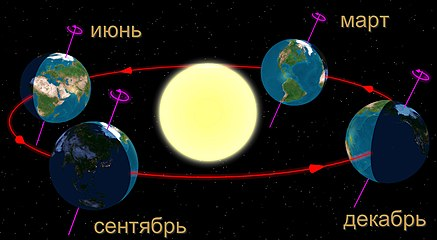
Но чем объективно отличаются эти теории? А вот чем: теорию Деметры-Персефоны можно гнуть как угодно. Почему дочь Деметры похитил Аид? С тем же успехом это мог быть, например, другой её брат — Посейдон. А ещё это мог быть сын, похищенный тёткой Герой. Или даже тем же Аидом — древние греки и не такое могли допустить! И почему Деметра непременно грустит? Может, она наоборот радуется, когда сплавляет дочь и остаётся одна. А ещё можно заменить всех богов на эльфов — теория хуже от этого не станет. Напротив, в теории наклона оси к эклиптике не получится заменить ни одну деталь без того, чтобы рухнуло всё объяснение. Земля плоская? Теория не работает. Солнце не шар в центре, а светильник в небесной сфере? Теория не работает. Ось вращения не наклонена к плоскости орбиты?.. Правильно — теория не работает!
Таким образом Дойч вводит критерий вариативности: хорошую теорию трудно вариировать. Если теперь вернуться к примеру с травой, легко понять, что с ней не так: траву легко заменить на сено, один килограмм — на два килограмма и так далее, поскольку все эти детали не играют никакой роли. Именно поэтому мы на уровне здравого смысла отвергаем большинство теорий, даже не ставя никаких экспериментов. И именно поэтому мы отказываемся от солипсизма в пользу реализма, хотя обе эти теории дают одинаковые предсказания. (Кстати, с точки зрения сторонников вульгарного трактования критерия фальсифицируемости, обе эти теории должны быть одинаково хороши).
Приведённые выше примеры показывают, что ещё до стадии экспериментальной проверки мы вполне способны отфильтровывать хорошие теории от плохих, основываясь на том, насколько трудно вариировать объяснения, заключающиеся в этих теориях. И не просто способны, а именно так мы и делаем — от повседневного быта до научной лаборатории. Более того, не имея соответствующих объяснений, мы даже не сможем ни придумать хороший план эксперимента, ни истолковать его результаты.
Дойч пишет, что теория мультиверса настолько глубоко увязана с остальными нашими взглядами — об этом ниже — что её стоило бы ввести даже не как объяснение квантовых экспериментов, а по совершенно независимым соображениям.
Но самым упрямым противникам теории мультиверса он бросает вызов, далёкий от философии. На сегодняший день инженерами достигнуто т.н. квантовое превосходство. Например:
Все эти замечательные результаты, кстати говоря, получены на основе трудов Дойча, Экерта, Шора и других. «Квантовое превосходство» тут означает, что мы провели вычисление, принципиально невозможное на классическом компьютере. Лично я впервые познакомился с этим понятием в 1997 году, прочитав в журнале «КомпьюТерра» интервью с одним из российских физиков (каюсь, не вспомню его имя — возможно, это был Алексей Китаев), рассказывающем о (тогда ещё) перспективах квантовых вычислений. Журналист задаёт ему вопрос, который немедленно приходит на ум любому вдумчивому читателю: а о каком именно классическом компьютере идёт речь? «Пентиум-1», «Пентиум-2», «Крей»? Учёный отвечает: неважно, там такая башня из экспонент, что вы смело можете трактовать это как «о любом» (не будем забывать, что в видимой части вселенной содержится всего 1080 протонов, что налагает некоторые инженерные ограничения на максимальную сложность классического компьютера). Между тем, задействовано в квантовом вычислении буквально несколько десятков элементарных частиц (декларируемые «5 000 кубитов» — маркетинговые, поскольку речь идёт о раздельных узлах, но даже если бы они были настоящими, это всё равно слишком мало).
Дойч спрашивает: где же, по-вашему, ещё могло произойти такое гигантское вычисление, как не в мультиверсе целиком? Объясните мне, если сможете!
Ой, я убил своего дедушку из прошлого! Что теперь со мной будет?
Для большинства из нас идея о том, что наша Вселенная — лишь одна из триллионов реально существующих, уже за гранью воображения.
Для Дойча это отправная точка в путешествии к вопросам, традиционно считающимся парадоксами.
Но сначала ещё раз о том, насколько серьёзно всё вышесказанное. Дэвид вспоминает о конфликте между Инквизицией и Галилеем по поводу теории последнего. Будучи настоящим учёным, он подходит к вопросу как заправский историк, видимо, хорошо изучив доступные документы, но я здесь ограничусь кратким пересказом. Церковь отнюдь не возражала против теории Галилея самой по себе! Она соглашалась терпеть эту теорию до тех пор, пока та обозначалась как «просто теория». И не только терпеть — святые отцы готовы были с удовольствием ей пользоваться для прикладных целей, например, навигации. Всё изменилось, когда Галилей дерзнул заявить, что его теория действительно описывает физическую реальность. С этого момента и начались все его неприятности.
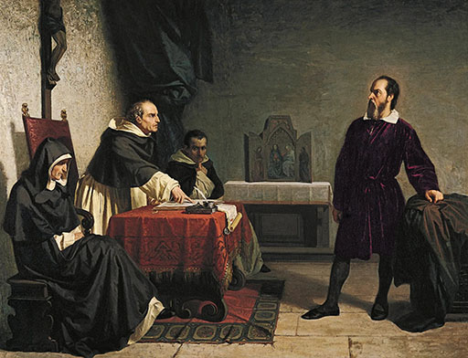
В наши дни огромное число людей соглашается терпеть квантовую теорию, поскольку она даёт невероятно полезные результаты. Некоторые даже готовы рассматривать конкретно мультиверсную теорию как забавные «теоретические построения», хорошо подходящие для описания эксперимента «Друг Вигнера». Но когда речь заходит о том, что она действительно описывает физическую реальность (иными словами: «альтернативный фотон» из двухщелевого эксперимента действительно существует), у неё начинаются те же проблемы, что и у Галилея (с поправкой на смягчение нравов).
Следовательно, выбор любого учёного — либо принять всерьёз все выводы из квантовой теории, даже те, что кажутся нам невероятными (например, что множество множеств сотрудников, работающих во множестве компаний Google совместно проводят параллельные вычисления, результат которых для всех них идентичен за счёт интерференции), либо уподобиться средневековой инквизиции. (Либо — предложить объяснение лучше мультиверсного, но такое объяснение должно быть ещё труднее вариировать).
Чтобы проиллюстрировать эту мысль, Дойч пишет: в то время, как я пишу эту главу, другие Дэвиды ушли пить чай. А некоторым Дэвидам совсем не повезло: в их синглверсе все атомы Солнца спонтанно направились к центру светила, в результате чего в эту минуту оно взорвалось.
Но вернёмся к тому, что именно следует из мультиверсной теории, если принять её всерьёз.
Есть вопросы, которыми задаётся каждое поколение любознательных детей. Например, что будет, если вал электромотора соединить с валом электрогенератора и раскрутить — не получится ли сэкономить на батарейках? Или, что будет, если получится изобрести машину времени, отправиться в прошлое и убить своего далёкого предка?
Моя школьная учительница физики на оба вопроса давала однозначный ответ: не получится. Причём, во втором случае причиной её уверенности была парадоксальность постановки вопроса. Рассуждая схожим образом, некоторые утверждают, что путешествия во времени должны быть невозможны именно потому, что если кто-то в будущем и изобрёл бы способ, то мы, жители их прошлого, должны были стать свидетелями перемещений.
Однако, такие рассуждения в корне неверны! Ведь если настоящее существует во всех своих вариациях сразу, то что тогда говорить о прошлом? Если бы способ перемещения во времени действительно существовал, ничего парадоксального в убийстве предка не было бы. Каждый предок существовал во всех своих возможных состояниях, в полном соответствии с мультиверсной теорией. Каждый потомок, в соответствии с нею же, тоже существует во всех своих возможных состояниях. Нет ничего парадоксального в том, что часть потомков, которая воспользовалась возможностью перемещения, оказалась физически связана с той частью предков, которая была ими убита.
Равным образом, не существует никакого парадокса «создания знаний из ничего», когда путешественник во времени берёт с собой полное собрание сочинений Шекспира и публикует его во времена, когда Шекспира не было даже в проекте. У книг по-прежнему остаётся автор — Шекспир из того синглверса, в котором он творил, не опираясь на ранее опубликованные труды. Более того, такой Шекспир не один — их множество.
Как физик и учёный, который тщательно формулирует свои мысли, Дэвид предупреждает: из этого рассуждения вовсе не следует, что путешествия во времени возможны. Законы физики запрещают множество трансформаций — например, путешествие со скоростью больше скорости света. Вполне может оказаться так, что путешествия во времени тоже ими запрещены. Речь не об этом. Если они и запрещены, то отнюдь не потому, что приводят к каким-то парадоксам. На самом деле, мы сейчас просто недостаточно хорошо понимаем физику пространства-времени — и (ложная) псевдопарадоксальность не должна останавливать движение научной мысли в этом направлении!
«Во многой мудрости много печали» — ознакомившись с мультиверсной концепцией путешествий во времени, вы уже никогда не сможете смотреть прежними глазами и получать удовольствие от целого пласта кинофантастики (от «Терминатора» до «Довода»). Все эти фильмы станут казаться вам сюжетно плоскими и абсолютно нефизичными.
К вопросу о природе времени
Помимо устранения псевдопарадоксов, теория мультиверса позволяет нам лучше понять саму природу времени. (Возможно, эта тема не настолько попсова интересна, но она гораздо глубже).
Представим себе эволюцию отдельно взятого синглверса. Законы квантовой механики не запрещают переход всей системы в состояние, полностью идентичное более раннему. Секундная стрелка спонтанно движется на деление назад — и так на всех существующих часах. (На самом деле, речь идёт о буквально каждом объекте — «часами» мы называем те из них, состояния которых удобно использовать для градуировки временной шкалы). Такая трансформация не запрещена — а мы не сталкиваемся с ней исключительно по причине маловероятности. Но как бы мала ни была вероятность, где-то в гигантском мультиверсе она физически реализуется. Собственно, «вероятность» в соответствии с мультиверсной теорией и значит «сравнительное количество синглверсов с данным исходом».
Однако, если взять идентичные по внутреннему состоянию «срезы» («моменты») синглверса из более раннего и более позднего времени — смогли бы ли мы хоть как-то их отличить? Ответ Дэвида: нет. Любая «навесная» хронология — это очень плохое объяснение, поскольку предполагает, что есть некий «надмировой» (в действительности — «надмногомировой») эталон, относительно которого эти срезы будут отличаться своим положением. Из этого простого рассуждения следует, что идея времени как чего-то «текущего» глубоко ложна. Есть огромное количество синглверсных «срезов» (многие из которых — идентичны), и законы физики устанавливают возможные способы их упорядочивания исключительно по их «содержимому».
Более того, судя по всему, нет никаких причин считать срез относящимся к какому-то отдельному синглверсу — по тем же соображениям, по которым мы отказываемся от идеи внешней хронологии. Все они совместимы, все они взаимозаменяемы. Эта идея известна нам под названием «многообразие в пределах неотличимости».
Иными словами, вся наша мультивселенная состоит из невообразимо большого числа отдельных «срезов». Некоторые мы можем рассматривать как моменты прошлого и будущего. Некоторые — как разные варианты исходов одного эксперимента. Но какова бы ни была природа этих срезов, она в обоих этих случаях одинакова: срезы никак не пронумерованы и не промаркированы «снаружи», их взаимное соответствие определяется только содержимым. В этом месте я напомню, что вы читаете обзор не фантастического романа, а книги, написанной физиком, который ссылается на научные работы других физиков:
Это понимание впервые появилось из ранних исследований в области квантовой гравитации в 1960-х годах, в частности, из работы Брайса ДеВитта[48], но, насколько мне известно, в общем случае было сформулировано только в 1983 году Доном Пейджем[49] и Вильямом Вутерсом[50].
Брайс ДеВитт, Дон Пейдж, Вильям Вутерс
Помимо этого, Дэвид рассуждает о том, как могло бы выглядеть путешествие во времени, если оно физически не запрещено. Чем должна быть машина времени и чем она быть не может, какие ограничения накладывают на её конструкцию имеющиеся физические теории и так далее.
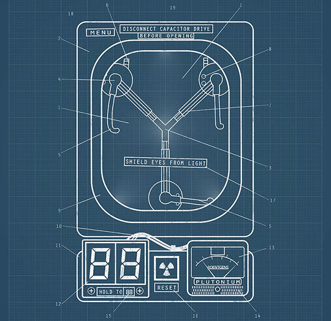
Эти рассуждения весьма занимательны, но пересказывать их здесь я, конечно, не стану: читайте сами! (Спойлер: нет, чертежей машины времени в книгах вы не найдёте. Однако... вы ведь и так это подозревали, правда?)
Свободу воле!
«Парадокс убитого дедушки» — не единственный «вечнозелёный» вопрос, которым задавалось (и задаётся) человечество. Другой такой вопрос — обладает ли человек свободой воли?
Проблема свободы воли восходит к Аристотелю, а может и к более ранним мыслителям. В западной философии после эпохи великого средневекового застоя к ней одним из первых обратился Спиноза (1632—1677). Если наши поступки — часть цепи причинно-следственных связей, не является ли свободный выбор иллюзией, рефлексировать по поводу которой некоторым из нас приходится в силу всё тех же связей?
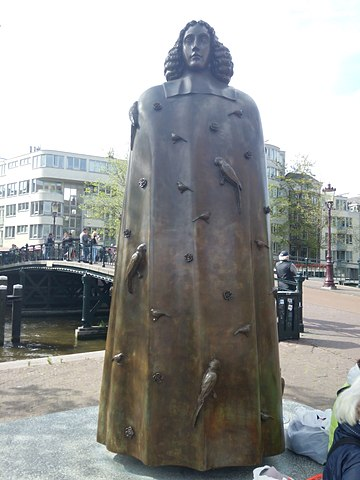
Памятник Спинозе в Амстердаме
К тому времени, когда я учился в университете (относительно недавно), проблема свободы воли уже перестала быть чисто философской и попытки её решения стали в значительной степени опираться на физику. По крайней мере, профессор, читавший нам лекции по философии, активно прибегал к объяснениям из квантовой механики (к сожалению, в той версии, которая была наиболее популярна — Копенгагенской). Физические эксперименты позволили установить, говорил он, что природа случайна в своей основе. Это позволяет нам снять с себя ярмо детерминизма (тех самых жёстких причинно-следственных связей).
Сплетенье знаний (раздел для настоящих энтузиастов философии науки)
Если рассуждения о том, как устроена наука, кажутся вам скучными — смело проматывайте к следующему разделу!
...
Что ж, теперь, когда после двух предупреждений все любители дешёвых сенсаций нас покинули, и остались те, кому наука сама по себе кажется интересной, вернёмся ненадолго к эпистемологии.
Упомянутое выше переплетение философии и физики само по себе является весьма любопытным. Ранее считалось (а многими и считается до сих пор), что наука иерархична. Такой подход называется редукционистским. Например, часто говорят, что химия — это всего лишь раздел физики. Поскольку так или иначе всё в этом мире подчиняется законам физики, вообще любую науку можно представить как её раздел. Саму же физику часто пытаются свести к базовым взаимодействиям наиэлементарнейших частиц, описание которых незаслуженно претендует на звание «Теория всего».
Редукционизму Дэвид противопоставляет идею эмерджентности. Объяснения на каждом уровне самостоятельны и несводимы к объяснениям более низкого уровня. Знание механизмов sp2-гибридизации в химии не заменяет понятия валентности, из него не следуют автоматически описания всех технологий органического синтеза и так далее. В реальной науке объяснения из разных областей не сводятся в одну иерархию, а переплетаются подобно нитям. Само название книги «Структура реальности» в оригинале звучит как “The Fabric of Reality” — и это игра слов, поскольку “fabric” можно перевести как «ткань». «Ткань реальности» — это метафора научного знания в целом, «сплетённого» из объяснений, традиционно относящихся к разным дисциплинам: физике, эпистемологии, теории вычислений, теории эволюции. Эти объяснения поддерживают друг друга и совместно позволяют штурмовать сложные проблемы — как в примере выше.
То, насколько важна идея эмерджентности (при всей её на первый взгляд скучности), трудно переоценить. Мало того, что она задаёт ориентир для научного прогресса в целом (и способна скинуть какую-нибудь теорию струн с олимпа «теорий всего»), так ещё и внимательный читатель сможет увидеть, как на её основе строятся такие сугубо практические вещи, как методика “Five whys” (крайне рекомендуется для ознакомления и инженеру, и менеджеру!).
Но как сформулировать её получше?
На протяжении всей второй книги, «Начала бесконечности», Дэвид только один раз позволяет себе самоцитату из «Структуры реальности». Видимо, формулировка кажется ему настолько хорошей, что пытаться переформулировать мысль — только её испортить, поэтому я тоже процитирую её в том же самом виде:
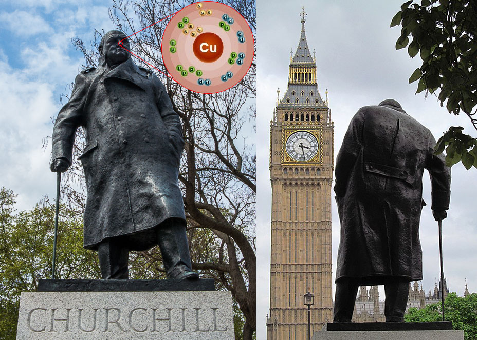
Например, рассмотрим конкретный атом меди на кончике носа статуи сэра Уинстона Черчилля, которая находится на Парламентской площади в Лондоне. Я попытаюсь объяснить, почему этот атом меди находится там. Это произошло потому, что Черчилль был премьер-министром в палате общин, которая расположена неподалёку; и потому, что его идеи и руководство способствовали победе союзных сил во Второй мировой войне; и потому, что принято чествовать таких людей, ставя им памятники; и потому, что бронза, традиционный материал для таких памятников, содержит медь и т. д. Таким образом, мы объясним физическое наблюдение низкого уровня — присутствие атома меди в определённом месте — через теории чрезвычайно высокого уровня о таких эмерджентных явлениях, как идеи, руководство, война и традиция.
Нет никакой причины, по которой, пусть даже в принципе, должно существовать какое-либо более низкоуровневое объяснение появления этого атома меди в этом месте, чем то, которое я только что привёл. Предположим, что упрощённая «теория всего» в принципе дала бы низкоуровневое предсказание вероятности, что такая статуя будет существовать, если известно состояние (скажем) Солнечной системы в какое-то более раннее время. Точно так же эта теория в принципе описала бы, как эта статуя могла туда попасть. Но такие описания и предсказания (конечно же, абсолютно нереальные) ничего бы не объясняли. Они просто описывали бы траекторию движения каждого атома меди от медного рудника через плавильную печь, мастерскую скульптора и т. д. Они также могли бы сформулировать, какое влияние на эти траектории оказывают силы, действующие со стороны окружающих атомов, например, тех, из которых состоят тела шахтёров и скульптора, и, таким образом, предсказать существование и форму статуи. В действительности такое предсказание следовало бы отнести к атомам по всей планете, вовлечённым, кроме всего прочего, в сложное движение, которое мы называем Второй мировой войной. Но даже если бы вы обладали сверхчеловеческой способностью следовать таким многословным предсказаниям нахождения атома меди в том месте, вы всё равно не смогли бы сказать: «Да, я понимаю, почему он там находится». Вы просто знали бы, что его попадание туда таким образом неизбежно (или вероятно, или что угодно ещё), если известны начальные конфигурации атомов и законы физики. Если бы вы захотели понять, почему он там находится, у вас по-прежнему не было бы другого выбора, кроме как сделать следующий шаг. Вам пришлось бы выяснить всё, что касается этой конфигурации атомов и их траекторий, из-за которых атом меди оказался именно в этом месте. Такое исследование стало бы творческой задачей, какой всегда является открытие новых объяснений. Вам пришлось бы обнаружить, что определённые конфигурации атомов подтверждают такие исходящие явления, как руководство и война, связанные друг с другом объяснительными теориями высокого уровня. И только узнав все эти теории, вы смогли бы полностью понять, почему этот атом меди находится именно там.
Так что же там со свободой воли?
В соответствии с мультиверсной теорией оказывается, что детерминистская интуиция Спинозы, Лапласа и ещё целой кучи парней, отказывавшихся верить, что «Бог играет в кости» была верна — с учётом одного маленького нюанса. Детерминизм распространяется не на отдельно взятые синглверсы, а на мультивселенную в целом. Причинно-следственные связи никуда не исчезают, просто если у одной причины может быть несколько возможных следствий с той или иной вероятностью, все они имеют место быть. Это позволяет по-новому взглянуть на проблему свободного выбора. Выбора действительно нет, но не потому, что он был предопределён во времена Большого взрыва и не потому, что всем на свете рулит слепая случайность, а потому, что в масштабах мультиверса человек совершает все возможные поступки одновременно. Тут я снова позволю себе прямо процитировать одну из финальных глав «Структуры реальности»:
Рассмотрим следующее типичное утверждение с отсылкой к свободной воле: «После тщательного размышления я выбрал сделать X; я мог бы сделать другой выбор; это было правильным решением; у меня хорошо получается принимать такие решения». В рамках любой классической картины мира это утверждение абсолютно бессвязно. В рамках картины мультиверса оно имеет прямое физическое представление, показанное в таблице 13.1. (Я не предлагаю определять моральные или эстетические ценности на основе таких представлений; я просто отмечаю, что благодаря мультиверсному характеру квантовой реальности свободная воля и связанные с ней концепции теперь совместимы с физикой.)
В таком варианте тьюрингова концепция вычисления выглядит менее отвлечённой от человеческих ценностей и не является препятствием пониманию человеческих качеств, подобных свободной воле, при условии, что она понимается в контексте мультиверса.
Конечно, такой подход не закрывает проблему свободы воли окончательно. Чёрт возьми, теперь, когда мы отвязали её от детерминизма, стало намного труднее сформулировать, в чём же она вообще заключается. И это верный признак того, что в этой области впервые со времён Аристотеля был достигнут значимый прогресс. В будущем мы, безусловно, сможем не только правильно сформулировать эту проблему, но и решить её. И хотелось бы верить, что для этого нам не придётся ждать ещё две тысячи лет.
«Илон, ты не прав!» или Во всём нужна мера
Нет, имя Илона Маска в книгах напрямую не упоминается. Но мы и от самого Илона знаем о некоторых его взглядах на космологию. И эти взгляды, судя по всему, ошибочны.
Но сначала поговорим о бесконечностях. Скажите, вы верите в бесконечность ряда натуральных чисел?
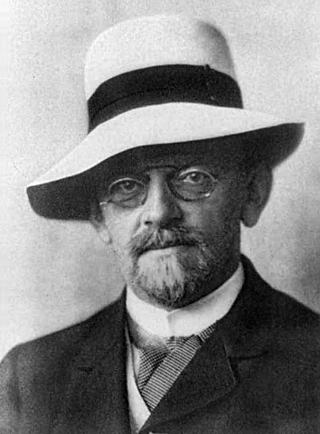
Давид Гильберт — один из выдающихся математиков, в частности, приведший геометрию к привычному ныне виду и разработавший матаппарат, используемый в ОТО. Его мысленный эксперимент «Отель “Бесконечность”» — важная иллюстрация к пониманию бесконечности — подробно разбирается в книге Дойча.
Как это ни странно, но до сих пор некоторые учёные (скажем конкретнее — математики) в неё не верят! Такая концепция получила название финитизма. Финитизм соблазнителен тем, что отражает некоторые наши интуитивные представления об окружающей действительности. Мы кажемся себе конечными в пространстве и времени, как и объекты, с которыми мы имеем дело. Почему же хоть что-то вообще (например, ряд натуральных чисел) должно быть бесконечным? Однако, если принять эту концепцию, возникает вопрос: если натуральных чисел не бесконечно много, какое из них является наибольшим? Понятно, что назвать такое число финитисты не могут, поэтому они говорят следующее: да, натуральных чисел конечное количество, но при этом наибольшего из них не существует. Однако, это нарушает логический закон (закон исключённого третьего), который гласит, что если утверждение ложно, то противоположное утверждение истинно (и наоборот). Что ж, говорят финитисты, значит этот закон ошибочен.
Дойч находит весьма ироничным то обстоятельство, что финитисты, пытаясь построить «интуитивно верную» теорию, немедленно сооружают что-то чудовищно контринтуитивное. Как-никак, законы логики лежат в основе любых научных рассуждений, почему же в теории чисел мы должны от них отказываться? На самом деле, ошибка финитистов в том, что соответствие интуиции — очень плохой критерий для оценки теории. Хороший критерий — низкая вариативность объяснений. Если законы логики не распространяются на теорию чисел, это нужно объяснить, иначе такое предположение настолько же «оправданно», как и предположение о пользе травы для лечения простуды. А если распространяются, и самое большое число действительно существует (и мы просто пока его не знаем) — почему к нему нельзя прибавить единицу и получить число ещё больше? Это тоже требует объяснений. Теория о том, что натуральных чисел бесконечно много, не вводит лишние сущности, которые мы не можем объяснить, а значит является предпочтительной. (Конечно, если позже мы обнаружим такие объяснения, наши взгляды придётся пересмотреть).
Выше упоминалось, что нижняя экспериментальная оценка количества синглверсов — порядка триллиона. Усовершенствуя технологию, наверное, можно будет её повысить — но насколько? Есть ли у неё верхний предел? Иными словами, действительно ли бесконечна (мульти-) Вселенная, или же только «человеческая глупость»? (Надеюсь, вы узнали автора цитаты). Дойч утверждает: в квантовой теории нет предпосылок для существования максимального числа синглверсов, как нет предпосылок для существования максимального натурального числа. Что касается идентичных синглверсов (которых тоже бесконечно много), в дело опять вступает «многообразие в пределах неотличимости».
Объективности ради следует сказать, что не все сторонники мультиверсной теории с этим согласны. Год или два назад на Хабре публиковалась статья российского физика, который, рассказывая о мультиверсной теории в довольно доброжелательном тоне, подчёркивал, что количество синглверсов может быть как бесконечно, так и конечно. (И, раз уж об этом зашла речь, мультиверс, про который иногда пишет автор регулярно переводимой на Хабре колонки «Спросите Итана» — совсем из другой теории, его нельзя путать с квантовым мультиверсом. Дойч его тоже упоминает, но скептически, как намного более спекулятивную теорию, чем эвереттовская).
Но вернёмся, наконец, к Илону. Илон верит, что мы живём в симулированной вселенной. Почему? Потому, что это, на самом деле, «аргумент Бострома», и в качестве такового, он и упоминается в «Начале бесконечности». Аргумент этот назван в честь его популяризатора — Ника Бострома («философа», как представляет его читателям Дойч). Суть аргумента в следующем: представим себе, что рано или поздно технически развитая цивилизация оказывается способна провести моделирование целой вселенной. (Если это не запрещают законы физики, конечно). Моделирование вселенной (а не просто отдельно взятой системы) предполагает, что мы получаем на выходе нечто, не уступающее по свойствам нашей собственной. А значит, в ней тоже рано или поздно появится цивилизация, которая захочет повторить весь цикл — и так много раз. Следовательно, вероятность того, что мы живём в оригинальной вселенной-прародительнице очень мала.
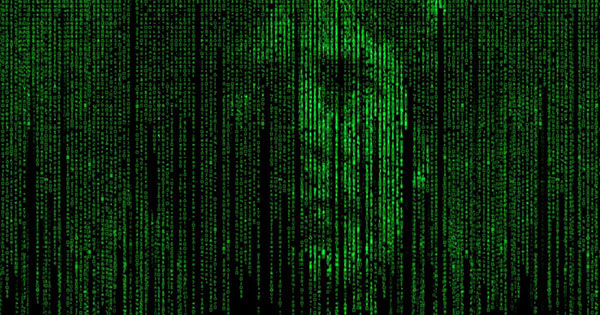
Важный вопрос, который при этом возникает — будет ли бесконечной такая цепочка (или дерево) симуляций, или она где-то заканчивается? И опять, как в случае с финитизмом, конечность числа симуляций требует объяснений. Если «базовая» вселенная в принципе способна порождать достаточное количество «дочерних», чтобы аргумент Бострома имел силу, почему все они заканчиваются тупиком? Интуитивное представление о том, что есть какой-то ресурс, который постепенно исчерпывается при каждой симуляции, неверно, поскольку тогда нельзя сказать, что вообще была симулирована хотя бы одна вселенная. (Симуляцией отдельных частей мы занимаемся каждый день).
На первый взгляд кажется, что это ещё больше подтверждает правоту Бострома и Маска. Если количество симуляций велико, но не бесконечно, вероятность того, что мы живём в симуляции, тоже велика. Если же бесконечно — вероятность должна и вовсе стремиться к единице. Однако, на самом деле всё полностью наоборот.
Дойч задаёт следующий простой вопрос. Если взять множество всех натуральных чисел:
1, 2, 3, 4, 5, 6, 7, 8, 9, 10, 11, <...>,
какую долю из них составят чётные? Не спешите отвечать: «50%», потому, что это вопрос с подвохом. Мы вполне можем записывать натуральные числа и в другом порядке:
1, 3, 2, 5, 7, 4, 9, 11, 6, <...>
При этом доля чётных, очевидно, сокращается до одной трети. Легко представить, как манипулируя порядком, долю чётных чисел можно сделать какой угодно: от очень близкой к нулю до очень близкой к 100%. Подвох заключается в том, что изначально речь шла о ряде натуральных чисел, но вопрос был задан про множество, а это не одно и то же. Ряд является упорядоченным, поэтому в (бесконечном) ряду натуральных чисел чётных действительно половина, а к неупорядоченному множеству понятие меры (а следовательно — доли) вовсе неприменимо! Имея дело с бесконечными множествами, мы всегда должны найти способ их упорядочить прежде, чем переходить к подсчёту долей и вероятностей.
В случае с бесконечным множеством синглверсов таким упорядочивающим фактором являются сами законы квантовой механики. Именно благодаря им мы можем говорить, что вероятность заданного исхода какого-то эксперимента будет равна, например, 25%. Это означает, что такой исход содержится примерно в каждом четвёртом синглверсе из бесконечного множества. («Примерно» — потому, что к ним примешивается небольшая доля синглверсов, где сломалась экспериментальная установка, взорвалось Солнце и т.п.)
Но в случае с множеством симуляций теории, которая подобно квантовой механике вводила бы способ упорядочивания, не разработано. И пока не будет предложена хорошая идея о том, как это сделать, мы не имеем права оценивать вероятность нахождения в симуляции. Дойч упоминает, что в космологии существует сходная теория, в которой роль цивилизаций, занимающихся моделированием вселенных, отводится чёрным дырам. Такую теорию предложил физик Ли Смолин, известный тем, что он заложил основы знаменитой петлевой квантовой гравитации. В этом месте я процитирую Википедию:
Смолин — автор оригинальной идеи «размножения вселенных» (fecund universes), называемой также теорией «космологического естественного отбора» (CNS, Cosmological Natural Selection). Согласно этой гипотезе, «по ту сторону» чёрной дыры возникает новая вселенная, в которой фундаментальные физические постоянные могут отличаться от значений для вселенной, содержащей эту чёрную дыру. Разумные наблюдатели могут появиться в тех вселенных, где значения фундаментальных постоянных благоприятствуют появлению жизни. Процесс напоминает мутации в ходе биологического естественного отбора. Подробное описание своей гипотезы Смолин опубликовал в книге «Жизнь Космоса» (The Life of the Cosmos, 1999[9]).
И опять окажется, пишет Дойч, что эта теория сталкивается с проблемой определения меры:
Остроумный вариант антропного принципа был предложен физиком Ли Смолином[46]. Он опирается на то, что согласно некоторым теориям квантовой гравитации чёрная дыра может породить внутри себя целую новую вселенную. Смолин предполагает, что в этих новых вселенных могут быть другие законы физики и что, более того, на эти законы будут влиять условия, существующие в порождающей вселенной. В частности, разумные существа в порождающей вселенной могут сделать так, что чёрные дыры будут порождать вселенные с удобными для индивидуальных существ законами физики. Но в объяснениях такого типа (известных как «эволюционные космологии») есть одна загвоздка: а сколько вселенных было вначале? Если их было бесконечно много, то непонятно, как их подсчитывать, а из-за того, что каждая вселенная с астрофизиками породит несколько других, доля таких вселенных не увеличится заметным образом. Если не было первой или первых вселенных и весь этот ансамбль существует уже бесконечное время, то теория сталкивается с проблемой бесконечного регресса. Ведь тогда, как заметил космолог Франк Типлер[47], вся совокупность должна была «бесконечно давно» прийти в равновесное состояние, а это означало бы, что эволюции, приведшей к этому равновесию, — того самого процесса, который должен объяснить тонкую настройку, никогда не было. Если же изначально была только одна вселенная или конечное их число, то остаётся проблема тонкой настройки в исходной вселенной (вселенных): были ли в них астрофизики?
Но причём тут астрофизики?
Опиум для народа
С одним из моих коллег — хорошо образованным умным инженером — приключился забавный казус. В тридцать с лишним лет он вдруг уверовал в Бога.
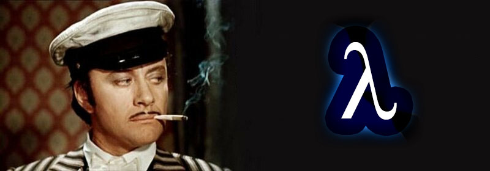
Как это произошло?
Всё просто: он столкнулся с тем, что наука космология называет «проблема тонкой настройки». Вот как формулирует её Дойч:
В 1974 году физик Брэндон Картер вычислил, что, если бы сила взаимодействия между заряженными частицами была на несколько процентов меньше, планеты не могли бы сформироваться, и звёзды были бы единственным видом плотных объектов во Вселенной; а если бы сила была на несколько процентов больше, то звёзды не взрывались бы, и кроме как в них нигде не было бы никаких других элементов, за исключением водорода и гелия. И в том, и в другом случае не было бы сложных химических процессов, а значит, вероятно, и жизни.
Но если бы дело касалось только одного значения! Астрофизик Мартин Рис подсчитал, как повлияло бы на вселенную изменение нескольких безразмерных физических констант:
N, показатель того, насколько сила электромагнитного взаимодействия двух протонов больше гравитационного;
Эпсилон (ε), доля массы, выделяющейся в виде энергии, при синтезе гелия из водорода;
Омега (Ω), параметр плотности Фридмана;
Лямбда (Λ), космологический член aka «величайшая ошибка Эйнштейна»;
D, число пространственных измерений в пространстве-времени (если кто забыл — оно равно трём).
Оказалось, что повлияло бы не очень хорошо — даже при незначительных изменениях результат получался «не совместимым с жизнью». Не все согласны с рисовскими расчётами, считая полученные им «благоприятные» диапазоны чересчур узкими, но, тем не менее, наша вселенная выглядит так, как будто кто-то очень точно выставил значения на регулирующих ползунках, чтобы мы могли существовать.
Чтобы объяснить такое совпадение, учёными был предложен так называемый «антропный принцип». Суть его сводится к тому, что если бы значения физических констант не позволяли существование жизни вообще и астрофизиков в частности, некому было бы задаваться такими вопросами. Раз мы существуем и задаёмся (или, хотя бы, читаем, как этими вопросами задаются Картер, Рис и Дойч), значит значения должны это позволять. Именно с тех пор вопрос «существования астрофизиков», о котором пишет Дойч, стал привычной частью научных дискуссий. (Это не считая той потенциальной роли, которую астрофизики будущего возможно будут играть в создании новых вселенных).
Антропный принцип не для всех выглядит как хорошее объяснение. В частности, мой коллега, как я и написал выше, предпочёл сделать вывод о том, что вселенная — чей-то разумный замысел.
Дэвид тоже не считает антропный принцип хорошим объяснением, но выводы, мягко говоря, делает немного другие. Антропный принцип, который не может решить эту проблему, возможно, будет частью другого, хорошего, объяснения. А возможно, что нет. Я не буду пересказывать тут его критику антропного принципа полностью, а ограничусь только двумя принципиальными соображениями.
Во-первых, он приводит т.н. «аргумент Сиамы». (Деннис Сиама, британский физик и космолог, был научным руководителем Дойча). Если взять диапазон значений какой-то константы, совместимый с возникновением жизни, с оптимальным значением посредине, а потом измерить значение для произвольно выбранной вселенной, оно, скорее всего, не будет в точности оптимальным (как случайно брошенный дротик и попавший в мишень, скорее всего, не попадёт точно в центр). Но насколько далеко оно будет от края? Допустим, что оно окажется не далее, чем 10% ширины диапазона (именно такую близость мы будем считать признаком тонкой настройки). Что произойдёт, если мы повторим эти действия для второй, третьей и т.д. константы?
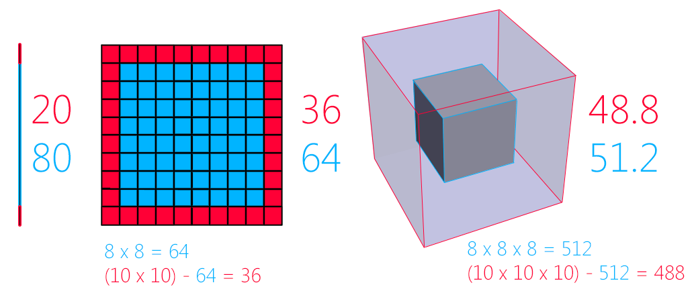
Для одной константы только 20% возможных значений окажутся подозрительно близко к краю. Для двух констант — уже 36% их комбинаций. Для трёх — 48.8%. Для ста констант — 99.9999999%. Получается, чем больше констант мы рассматриваем, тем менее тонко настроенной выглядит вселенная (не наоборот!).
Но главным соображением будет то же, что и в случае с аргументом Бострома. Если рассматривать наш мультиверс с его значениями и физическими законами как один из множества, получается что мы имеем дело уже с... мульти-мультиверсом. (Если у вас в этом месте слегка закружилась голова, я вас не виню — меня это чувство не покидало на протяжении обеих книг. За столь высоким полётом мысли трудно следить без головокружения!) Что представляет собой мульти-мультиверс? Является ли он континуумом реально существующих мультиверсов, как в космологии Смолина или ряде других космологий? Моделируется ли он разными астрофизиками? Или только наш мультиверс физически воплощён, а остальные просто океан нереализованных возможностей? Не имея хорошего ответа на этот вопрос, мы не можем упорядочить все эти мультиверсы, а значит — ввести меру и сосчитать доли.
Кажется, мой коллега всё-таки слегка поторопился. Списать всё на богов (вспомните пример с Деметрой и Персефоной!) — обычно плохая идея для научного объяснения.
А не лохматишь ли ты бабушку, дружок?
Всё изложенное выше — мультивселенные; квантовые вычисления, размазанные по параллельным мирам; парадоксы путешествий во времени и свободы воли — по идее, должно вызывать у читателя здоровый скептицизм. Неужели в такие неочевидные и сложные цепочки рассуждений не могут закрасться какие-нибудь ошибки, которые сделают выводы неверными?
Ответ Дэвида, возможно, кого-то удивит: не могут. Они там гарантированно есть.
Выше я упоминал, что, возможно, Дойч не одобрил бы попытку придать больший вес идеям путём перечисления научных заслуг, должностей, званий и наград автора. Такое заключение о надёжности и достоверности знаний на основе авторитета источника называется ругательным словом джастификационизм. Однако, понятие джастификационизма намного шире. То, что авторитет может подвести и любой учёный может ошибаться, по нынешним временам достаточно очевидно. Не очень очевидно то, что порочна сама идея поиска надёжного и достоверного знания.
В противовес джастификационизму Дэвид приводит фаллибилизм. Главную интуицию фаллибилизма древние формулировали как «Errare humanum est» («Человеку свойственно ошибаться»). В современном виде эта идея звучит намного жёстче: любые наши теории неточны, неполны и содержат ошибки.
Лет десять назад один журналист описывал свои впечатления от посещения американского музея (какого именно, за давностью лет, я, боюсь, не вспомню — возможно, это был музей естественной истории). К одному из экспонатов прилагалась табличка, позволяющая восстановить научный контекст. Значилось на ней что-то типа: «Примерно 14 миллиардов лет назад произошёл Большой взрыв, вскоре после которого Вселенная за ничтожный промежуток времени (с 10−42 сек до 10−36 сек — СШ) увеличилась в объёме в огромное число (1078 — СШ) раз, прошла ряд первичных эпох, а позже в ней образовались первые звёзды и галактики». Незадолго до этого — на рубеже веков — креационистское лобби одержало ряд побед, благодаря которым за ним в некоторых регионах было законодательно закреплено право излагать свои взгляды, например, в учебниках, конечно, при условии обязательного указания: «Если рассматривать с позиций креационизма, который не является всеми признаваемой теорией». (Или, как пошутил по другому поводу детский писатель Владислав Крапивин, «ёрстка»). Журналиста неприятно поразил контраст между тоном изложения своих теорий креационистами, которые вынуждены делать оговорки по закону, и... скажем прямо — учёными. Которые, безаппеляционно излагая свои теории, никакой оговорки не делают. «Может, креационисты не так уж и плохи?», заключал журналист.
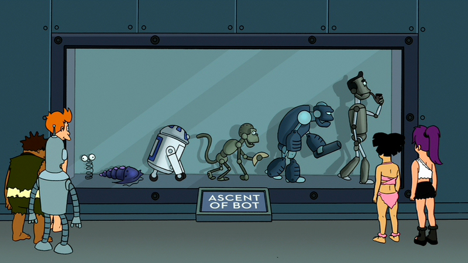
Но в этом и суть фаллибилизма! С тех пор, как он стал неотъемлемой частью научного ландшафта, абсолютно незачем приписывать перед каждой теорией дисклеймер, что это всего лишь теория (одна из), которая позже может быть до- и переработана. Это предполагается по умолчанию. Более того, такое явное указание вредно — оно предполагает, что где-то существует надёжная и достоверная теория, которая не требует подобной оговорки.
Многим фаллибилизм представляется неправильным. Математики, например, издавна пытались заложить надёжный, крепкий, нерушимый фундамент для математического знания. (Столкнувшись по пути с такими трудностями, как теорема Гёделя о неполноте). Но гораздо хуже них философы, которые принимают фаллибилизм, но делают из него вывод о бессмысленности всякой науки.
Дойч рассматривает интересный пример эволюции научных взглядов — силу тяжести. До Галилея и Ньютона господствовали взгляды, что если не оказывать на тело никакого воздействия, оно будет покоиться, воздействие приводит тело в движение, а после прекращения воздействия тело останавливается. После Ньютона стало понятно, что всё сложнее: если не воздействовать на тело, оно будет двигаться особым образом: равномерно и прямолинейно, воздействие же изменит характер движения (разгонит или затормозит) с учётом инерции. (Так что, если бы не досадные пустяки вроде трения, сопротивления атмосферы и городской инфраструктуры, мы по утрам могли бы выехать из двора, выключить зажигание и добраться до самого офиса, не тратя бензин — а космические корабли именно так и летают). Масса была введена в рассуждения о движении как мера инерции, а сила — как мера воздействия.
Подброшенное яблоко падает с ускорением (которое студенты технических специальностей раз за разом экспериментально определяют на лабораторных работах по физике, получая, в зависимости от кривизны рук и изношенности оборудования, значения от 1 до 100 метров в секунду за секунду). Очевидно, это потому, что на него действует сила тяжести!
Однако, Дойч пишет, что нет:
Объяснения устройства мира, даваемые фундаментальными теориями современной физики, досадно контринтуитивны. Так, большинство людей, не являющихся физиками, считают само собой разумеющимся, что если вытянуть руку горизонтально прямо, то почувствуешь, как сила тяжести тянет её вниз. Но в действительности это не так! Существование силы тяжести, как это ни удивительно, отрицается общей теорией относительности Эйнштейна, одной из двух наиболее глубоких физических теорий. Согласно ей, единственная сила, которая действует на руку в данной ситуации, — та, которую человек прикладывает сам, она направлена вверх и придаёт руке постоянное ускорение, чтобы отклонить её от кратчайшего возможного пути в искривлённой области пространства-времени.
Таким образом, сила тяжести была введена в физику, царила в ней на протяжении 230 лет, а затем была убрана из рассмотрения. Но был ли, в таком случае, смысл в её появлении вообще?
Конечно! Взгляды Галилея и Ньютона намного лучше описывали реальность, чем взгляды их предшественников. Они позволили лучше понять природу и получить приближённые математические решения множества задач. Взгляды Эйнштейна позволили понять природу ещё лучше и получить гораздо более точные решения, важные, например, для определения прецессии Меркурия и вообще всей нынешней спутниковой навигации (включая программу-навигатор для прокладывания маршрута, ответьте сами: «Был ли во всём этом смысл?»).
Но и взгляды Эйнштейна не являются финальным и достоверным ответом на вопрос об устройстве мира. Его теория фундаментально несовместима с квантовой механикой. Считается, что решить эту проблему должна новая теория — квантовая теория гравитации.
Дойч пишет: насколько бы проще стала наша жизнь, если бы мы вообще избавились от слова «теория» и заменили его словом «ошибка»! Классическая ошибка Ньютона стала большим шагом вперёд по сравнению с догалилеевскими временами. Затем её вытеснила гораздо менее грубая ошибка относительности Эйнштейна. А ошибка квантовой гравитации позволит нам соединить две фундаментальные «системы мира» и откроет глаза на происходящее в чёрных дырах и т.д.
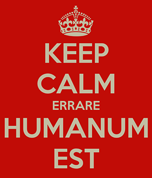
В другом месте он упоминает знаменитый мысленный эксперимент, в котором представители разных философских школ, в т.ч. индуктивист, стоят на вершине башни, рассуждая, безопасно ли оттуда спрыгнуть. Дэвид говорит: сбросьте-ка лучше с башни дурацкий индуктивизм — пусть наши теории умирают вместо нас! Если мы действительно хотим победить такие вещи как старость и смерть, как мечтают трансгуманисты, мы должны привыкнуть к постоянной замене теорий более хорошими (ведь прогресс науки больше не будет привязан к смене поколений!).
Как бы красиво, на первый взгляд, не звучали слова о необходимости поиска фундаментального, достоверного, безошибочного знания — в реальности такие вещи всегда приводят к тому, что какую-то теорию просто пытаются вывести из-под критики, что всегда влечёт за собой застой. Чтобы избежать его, мы, указывает Дэвид, должны следовать традициям открытости и критики. Собственно, он и следует, открыто озвучивая свои идеи (и выделяя те места, которые кажутся ему слабыми — он иногда подчёркивает: «Если окажется то-то и то-то, значит, я ошибаюсь. А если при этом окажется ещё и это — значит, я ошибаюсь очень сильно») и приглашая к их открытому обуждению и критике.
К счастью, в реальной науке с этими традициями всё очень неплохо:
Лет через двадцать Хью Эверетт, в то время аспирант в Принстоне, работавший под руководством выдающегося физика Джона Уилера[54], впервые изложил многомировые выводы из квантовой теории. Уилер не принял их. Он был убеждён (и до сих пор убеждён), что представления Бора [копенгагенская интерпретация — СШ], хотя и не отличающиеся полнотой, являются основой правильного объяснения. Но повёл ли он себя так, как нам следовало бы ожидать по стереотипу Куна? Попытался ли он подавить еретические идеи своего ученика? Напротив, Уилер опасался, что идеи Эверетта могут недооценить. Поэтому он сам написал небольшую заметку в дополнение к статье, опубликованной Эвереттом, и оба текста появились рядом в журнале Reviews of Modern Physics. Статья Уилера так убедительно объясняла и защищала статью Эверетта, что многие читатели предположили, что оба автора несут общую ответственность за излагаемые идеи. Поэтому теорию мультиверса в течение многих следующих лет ошибочно именовали «теорией Эверетта — Уилера», что весьма огорчало последнего.
Проявленная Уилером образцовая верность научной рациональности может быть даже чрезмерной, но она ни в коем случае не уникальна. В этом отношении я должен упомянуть Брайса ДеВитта, ещё одного выдающегося физика, который сначала выступал против Эверетта. Между ними случился исторический обмен письмами, когда ДеВитт выдвинул целый ряд детальных технических возражений против теории Эверетта, каждое из которых Эверетт опроверг. ДеВитт завершил своё доказательство на неофициальной ноте, указав, что он просто не может почувствовать, что «расщепляется» на множество отдельных копий всякий раз, когда принимает решение. Ответ Эверетта прозвучал как отголосок спора между Галилеем и Инквизицией. «А вы чувствуете, что Земля движется?» — спросил он, и смысл вопроса был в том, что квантовая теория объясняет, почему мы не чувствуем этого расщепления, так же как теория инерции Галилея объясняет, почему мы не чувствуем движения Земли. ДеВитт признал своё поражение.
Я же от себя добавлю следующее. Работая над этим обзором, я старался избегать технологии copy/paste черезмерного цитирования, зачастую приводя те примеры, которые казались мне более жизненными для российского читателя, а также формулируя в явном виде идеи, которые у Дэвида сформулированы неявно и так далее. С одной стороны, я надеюсь, что так мне лучше удалось вас заинтересовать и, тем самым, познакомить с потрясающими идеями потрясающего физика. С другой стороны — к ошибкам Дэвида, увы, я тем самым, возможно добавил свои личные. Да что там возможно — наверняка! (Простите меня). Кроме того, сам формат обзора накладывает ограничения, в первую очередь, на объём текста, что неизбежно влечёт некоторую скомканность изложения. Так что, прежде, чем метать тухлые помидоры в автора первоисточника — пожалуйста, ознакомьтесь с ним: возможно, их, на самом деле, заслужил автор обзора.
Продолжение следует. В следующий раз мы поговорим о том, что такое «жизнь» глазами физика, можно ли придать физический смысл понятию «знания», чтобы отличать их от информации, важны ли человек и разнообразные ресурсы в масштабах вселенной, о прошедшем телемосте с Дэвидом для российских энтузиастов науки, на котором он рассказал о своей новой теории, и попробуем всё-таки выяснить, почему же, чёрт возьми, цветы красивые!
Если вам понравился этот текст, вы гладко пишете по-английски, или знаете нейтива, которому интересен научпоп — можете помочь мне с вычиткой и редактированием перевода. (Я по-английски пишу коряво, но жизнь после 2022 года, боюсь, не оставила нам других вариантов). В этом случае напишите, пожалуйста, мне в личку. Помочь вычитать можно кусок любого объёма в любое удобное для вас время.


В таком варианте тьюрингова концепция вычисления выглядит менее отвлечённой от человеческих ценностей и не является препятствием пониманию человеческих качеств, подобных свободной воле, при условии, что она понимается в контексте мультиверса.